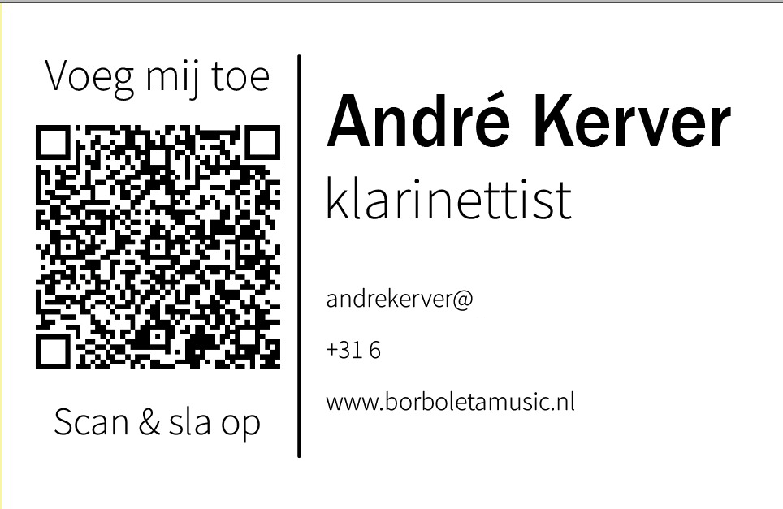
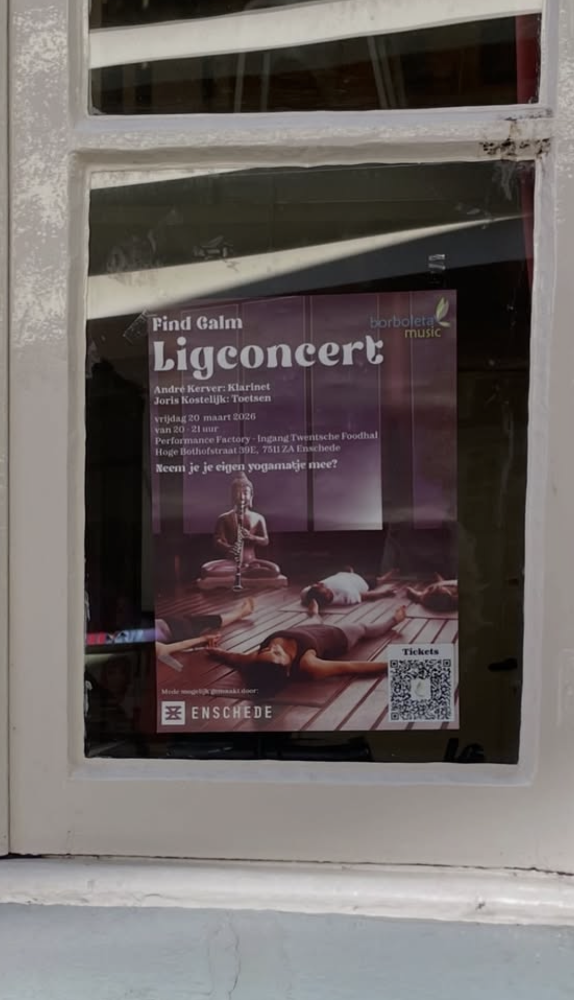
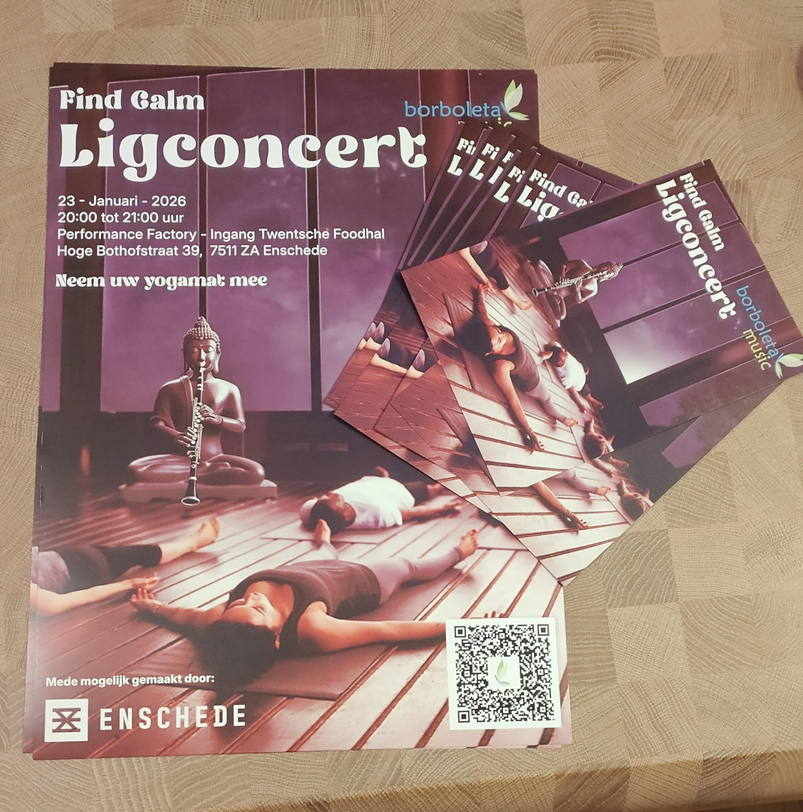
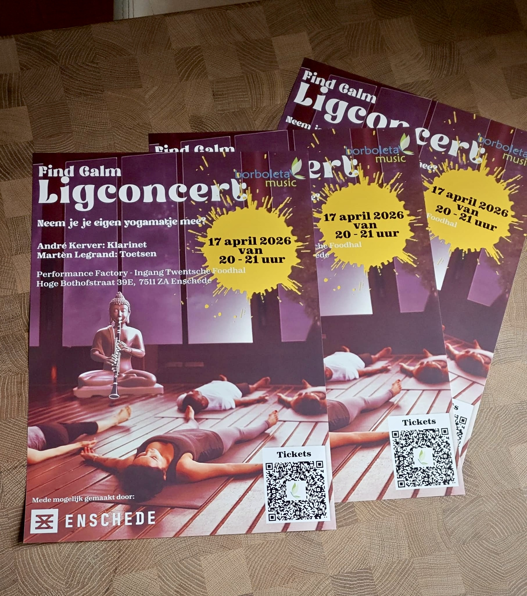
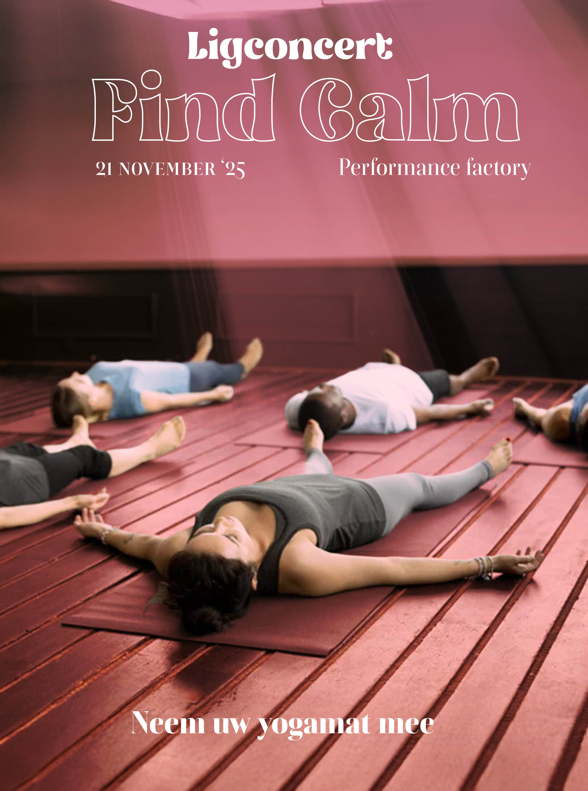

Mijn aanpak als contentmaker
Van briefing en eerste ontwerp tot feedback, productie en publicatie.
Bekijk de eindresultatenVan briefing naar ontwerp
Los van Borboleta kreeg ik van André Kerver de vraag of ik een visitekaartje voor hem kon maken. Hij is als zzp'er begonnen en wil meer zichtbaarheid creëren voor zowel zijn bedrijf als Borboleta Music.
André stuurde mij een aantal foto's en gaf aan welke foto hij graag op de voorkant wilde. Eerst ontwierp ik de voorkant met zijn gekozen foto, naam en een goed leesbaar lettertype. Daarna ontwierp ik de achterkant met zijn contactgegevens en website.

Ontwikkelen en aanscherpen
Ik verzamelde eerst alle benodigde informatie en wensen. Vervolgens ontwikkelde en evalueerde ik verschillende concepten, waarbij ik de feedback van André steeds in de volgende versie verwerkte.
In de uitwerking voegde ik drie belangrijke onderdelen toe:
- De volledige contactgegevens
- Een directe verwijzing naar zijn website
- Een scanbare QR-code met zijn gegevens
{kind=link}
{kind=link}
{kind=link}
“Niet iedereen is gek op die QR-codes. Mijn publiek is soms ook flink wat ouder.”
André Kerver
Terugblik
Het was belangrijk om een professioneel ontwerp te maken dat past bij André en zijn doelgroep. Door vooraf veel vragen te stellen en prototypes te delen, ontstond snel een duidelijk beeld van het gewenste eindresultaat.
Daarom staan zowel een QR-code als de normale contactgegevens op het visitekaartje. Na een laatste controle was het ontwerp klaar voor productie.
{kind=link}

De omgeving als uitgangspunt
Om de juiste benadering te vinden, keek ik eerst naar de doelgroep en wat haar aanspreekt. Veel bezoekers komen uit Enschede. De posters moesten daarom ook in het straatbeeld duidelijk herkenbaar en op afstand goed leesbaar zijn.
{kind=link}

Ontwerpen vanuit sfeer
Tijdens het ontwerpen lag de focus op de sfeer van het concert en de boodschap van Borboleta Music. De kleuren, typografie en afbeeldingen sluiten daarom telkens aan bij Muziek en Literatuur, Find Calm, Duo Penotti en In het donker woont een mooie stilte.
{kind=link}

Uitwerking voor drukwerk
Felle, contrasterende kleuren trekken de aandacht en maken praktische informatie, zoals de datum, snel zichtbaar. Voor iedere uitwerking controleerde ik samen met de klant de inhoud voordat het ontwerp naar de drukker ging.
{kind=link}

Voorbereiden, filmen en monteren
De eerste promotievideo monteerde ik uit aangeleverde beelden. Ik voegde leesbare tekst en gerichte effecten toe om de aandacht vast te houden, zonder de boodschap uit het oog te verliezen.
Voor de Find Calm-route stemden André en ik vooraf af waar de opname begon, wat er gezegd moest worden en waar hij in beeld stond. Door die voorbereiding konden we tijdens het filmen snel bijsturen en kleine fouten direct corrigeren.
Benadering en aanpak
Sociale media
Om de juiste benadering te vinden, onderzocht ik waar de doelgroep zich bevindt en welke platformen zij het meest gebruikt. Het Rijksmuseum Twenthe is bijvoorbeeld actiever op Instagram, terwijl de literatuurgroep vaker via Facebook wordt bereikt.
Daarom koppelden we de Instagram- en Facebookpagina van Borboleta Music. Vervolgens maakte ik per concert een sociale-media-uiting die aansloot op de bestaande posterstijl: van een statische post tot een korte video.
Kleur, typografie en de belangrijkste beeldelementen keren in ieder formaat terug. Zo blijft de herkomst herkenbaar, zonder dat alle berichten hetzelfde ogen.
